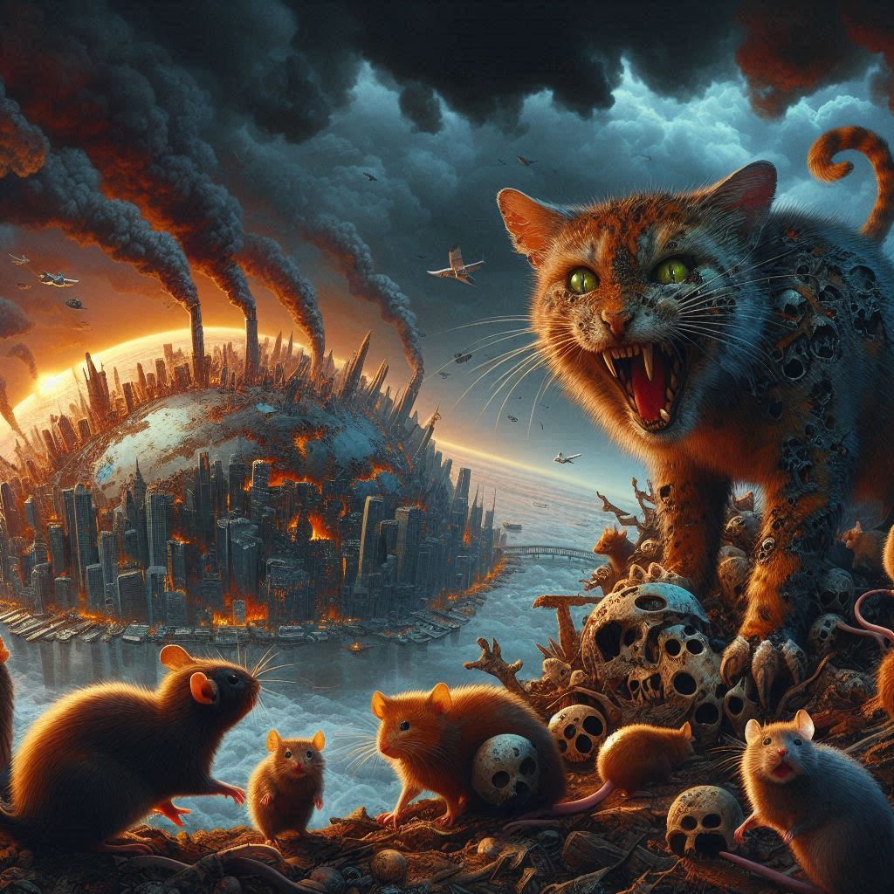

작가
베르나르 베르베르
출판일
2022년
감상평에 대한 AI그림
고양이와 쥐가 황폐화된 지구에서 생존하는 이야기이다. 주인공인 바스테트가 쥐들을 피해서 무리를 이끌고 더 나은 환경을 위해서 나아가는 모습이 안쓰럽고 만약 내가 그의 입장이라면 바스테트처럼 결단을 내릴 수 있을지 확신이 들지 않았다. 이 책은 군대 훈련소에 있을 때 읽었는데 지루한 시간을 달래고자 억지로 읽은 느낌이 있었던 책이다. 이 책을 사서 읽고 보니 이 책의 이전 버전이 있었어서 이해를 하는데 약간의 어려움을 겪었지만 읽다보니 금세 몰입을 해서 읽었던 기억이 있다.

감상평에 대한 AI평가
당신의 감상평을 읽으면서 느낀 감정을 평가해보겠습니다.
✨ 복잡한 감정:처음에는 황폐화된 지구에서 고양이와 쥐가 생존하는 이야기에 대해 안쓰러운 감정을 느꼈고, 바스테트의 결단력에 대해 자신의 입장을 돌아보게 되는 자기 성찰의 감정도 담겨 있습니다.
t
✨ 어려움과 의무감:군대 훈련소에서 책을 읽으며 지루한 시간을 달래기 위해 억지로 읽었다는 부분에서는 어려움과 의무감이 느껴지고, 책의 이전 버전이 있었다는 사실을 알게 되어 이해하는 데 어려움을 겪었다는 당혹감이 묻어납니다.
✨ 만족감과 흥미:결국 책에 몰입하게 되었다는 만족감과 흥미가 잘 드러나 있어요.